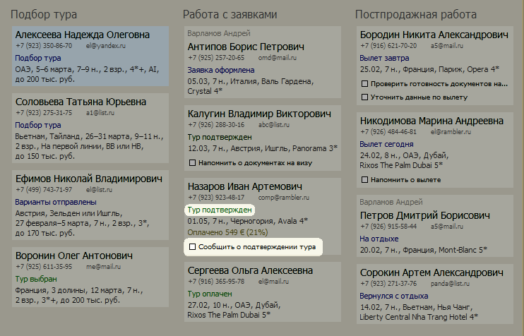
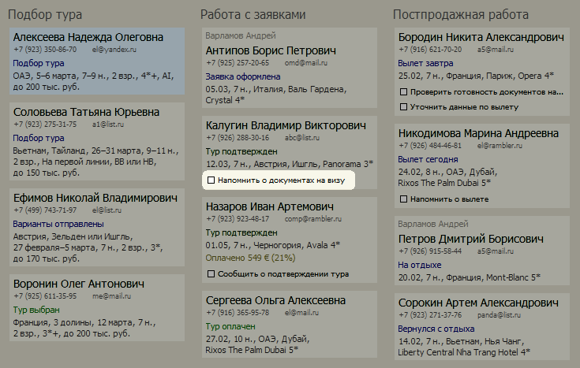
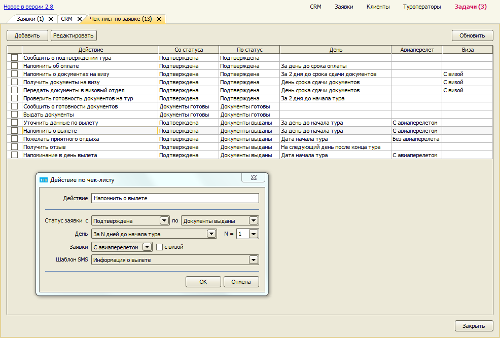

Чек-лист по заявке
На основе данных заявки и её текущего состояния на экране CRM менеджеру показываются задачи, которые нужно сделать по каждой заявке в настоящий момент. Например, после того как туроператор подтвердил тур, нужно сообщить об этом клиенту.

Когда близится срок сдачи документов на визу, нужно напомнить клиенту.

Список всех задач по заявке:
- Сообщить о подтверждении тура – в состоянии заявки “Подтверждена”
- Напомнить об оплате – в состоянии заявки “Подтверждена”, за 1 день до срока оплаты
- Напомнить о документах на визу – только для туров с визой, в состоянии заявки “Подтверждена”, за 2 дня до срока сдачи документов клиентом
- Получить документы на визу – только для туров с визой, в состоянии заявки “Подтверждена”, в день сдачи документов клиентом
- Передать документы в визовый отдел – только для туров с визой, в состоянии заявки “Подтверждена”, в день сдачи документов клиентом
- Проверить готовность документов на тур – в состоянии заявки “Подтверждена”, за 2 дня до начала тура
- Сообщить о готовности документов – в состоянии заявки “Документы готовы”
- Выдать документы – в состоянии заявки “Документы готовы”
- Уточнить данные по вылету – за день до вылета
- Напомнить о вылете – в день вылета
- Получить отзыв – на следующий день после окончания тура
Редактирование чек-листа
С версии 2.8
С помощью справочника "Чек-лист по заявке" можно добавлять новые действия по заявке и изменять существующие.

Остались вопросы? Напишите нам на e-mail